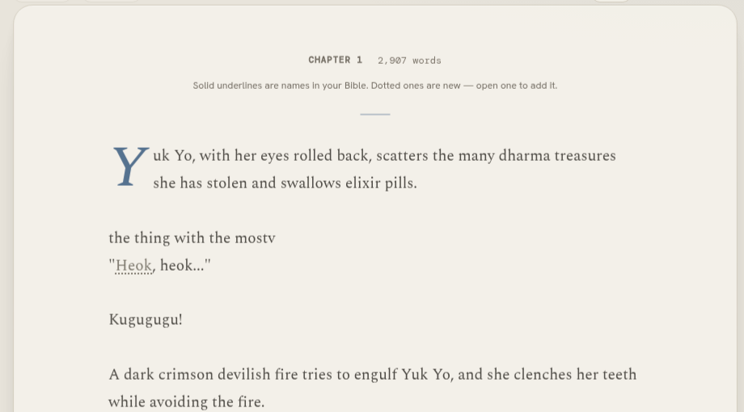
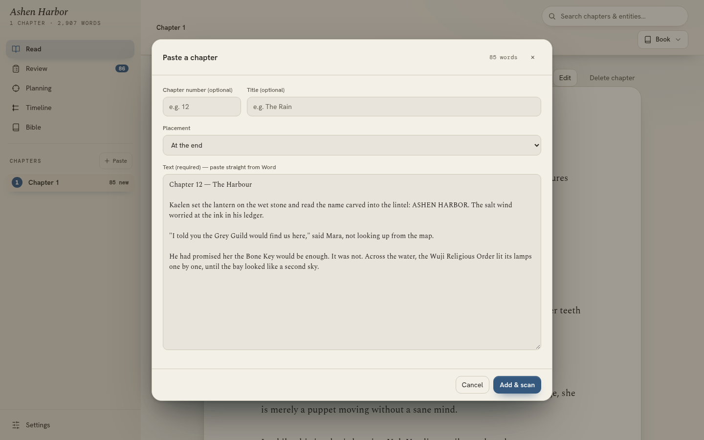
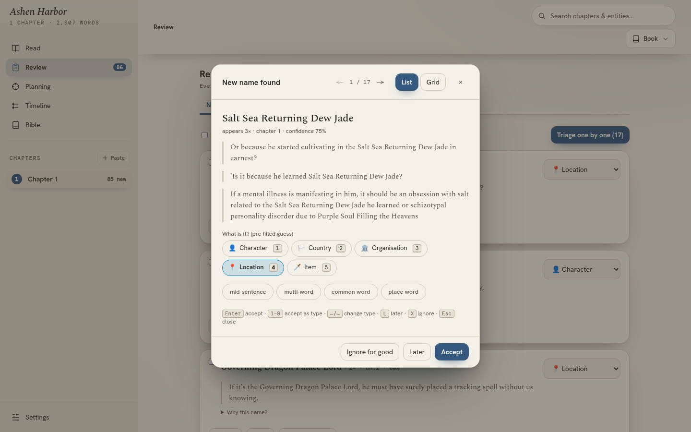
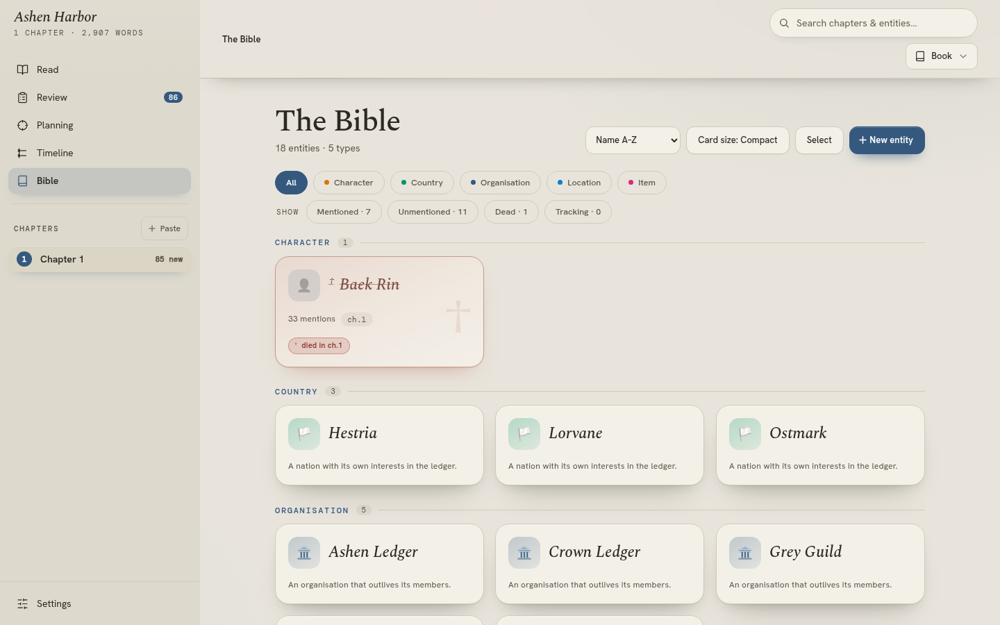
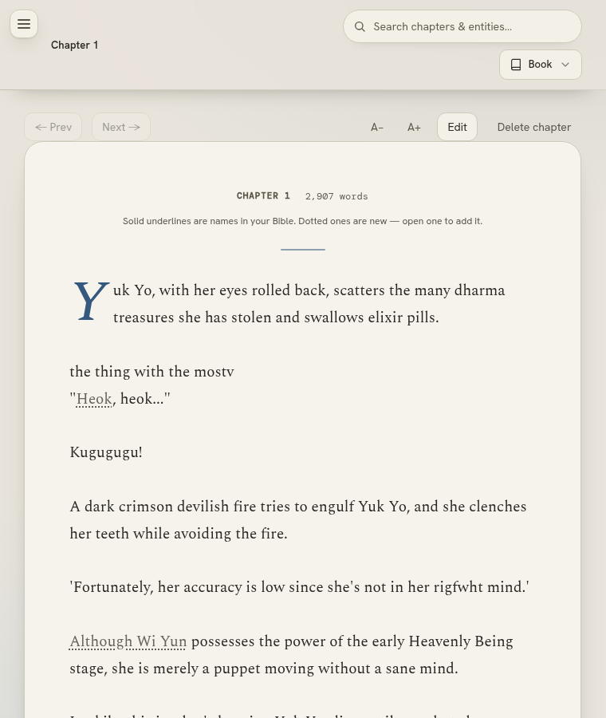
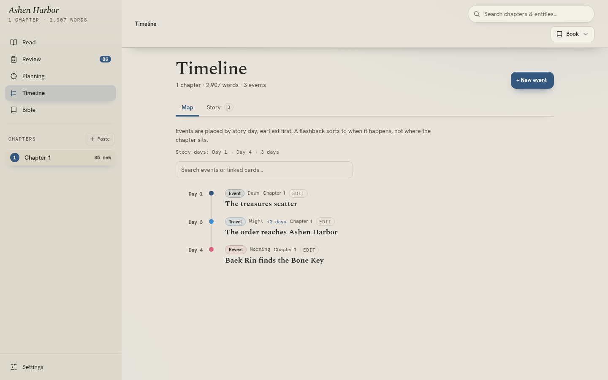
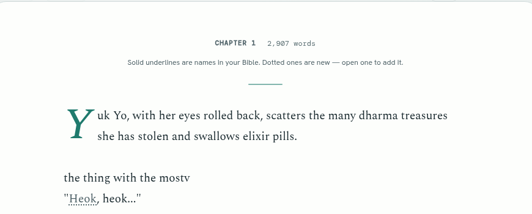

DocWriter
Paste a chapter. Triage the names. Keep the bible in one file you own.

The problem
The story outgrows the notes.
Three chapters in, the names start to drift. Was the harbourmaster Halden or Haldane? Which of the six notes files has the scene where the ferry burns? You mean to write it all down, and then you would rather be writing the book.
You also do not want to move the manuscript. It lives in Word, or Scrivener, or a folder of text files — wherever it has become home. No note-taking app has ever been worth moving the book out for.
So DocWriter asks for one thing: paste the chapter. It reads the names out of prose you already wrote and keeps the record beside it — not in an account, not in the cloud, in a file on your own disk.
The loop
Four steps, then back to the draft.
Every chapter takes the same short trip. The first time a name appears DocWriter asks about it; after that it links the name silently and stays out of the way.
-

01 — PastePaste a chapter
Paste the chapter into DocWriter; the text is stored as a revision and scanned for capitalised name candidates.
-

02 — TriageTriage the queue
Each candidate arrives with the sentence around it — Enter keeps it, 1–9 keeps it as a type, L leaves it for later and X ignores it.
- Enter keep
- 1–9 as a type
- ←→ change type
- L later
- X ignore
- Esc close
-

03 — CardsTyped cards
Keeping a name makes a card — Character, Location, Country, Organisation or Item — with any aliases and every appearance kept on a mention trail.
-

04 — ReadRead with names linked
The reader shows the chapter with known names underlined in their type's colour, and names still to triage left dotted.
Features
Everything it does, and nothing else.
No dashboard to feed, no second place to keep your notes. Each of these is in the app as it ships.
-
Offline & local
No account, no sync, no telemetry, and no network calls beyond the localhost port the app serves itself. One SQLite file per book, on your disk.
-
One file per book
The Book menu holds four rows: New book…, Open book…, Export book file (.db) and Export as Markdown. About shows which file is open; Settings → Export writes Markdown for readers.
-
Paste-to-scan detection
Capitalised words become candidates. A bundled dictionary of about 275,000 words demotes the plainly common ones — a demotion, never a hard drop, so Grace and Rose survive. Dialogue attribution, type keywords and repetition promote the rest; weak names wait behind “Show more low-confidence”.
-
Triage
A candidate arrives with the sentence around it, the whole key legend, and a same-thing/different question when a name looks like one you already have. Same thing stores it as an alias; ignoring leaves an Undo line behind.
-
Typed cards
Five types, aliases, a mention trail per card, and optional tracking — off, reappearance or absence — against a gap threshold you set. A card that loses its last mention goes to Trash, not away.
-
Planning
Chekhov's guns, the questions the prose raises, and duels.

-
Timeline
The Map's story-day rail, and the authored Story chronology with its Day N badges.

-
Settings
Theme, density, profile, export, backup, and the keyboard — eleven shortcuts you can rebind.

Three lights
Sepia to read by. Mocha at night.
Three themes ship with the app and are set per book. The reader above is Sepia; here it is in the other two.


Same paragraph in both: compare the ink and the page surface, not the words.